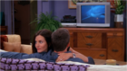
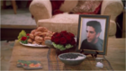

- s09e1- "The One Where No One Proposes"
Due to a misunderstanding, Rachel finds herself engaged to Joey instead of Ross. Things get more confused when Phoebe mistakenly assumes that Ross is the one who proposed.
- s09e2 - "The One Where Emma Cries"
Joey's attempts to gain Ross's forgiveness for mistakenly asking Rachel to marry him only result in emergency hospitalization. A weary Rachel seeks any remedy to quell baby Emma's nonstop crying.
- s09e3 - "The One With The Pediatrician"
Rachel's constant calls to her pediatrician force him to drop Emma as a patient. Ross becomes uncomfortable when Rachel seeks his childhood doctor as a replacement - mainly because he is still Ross's doctor.
- s09e4 - "The One With The Sharks" 
Worried she may lose her latest boyfriend, Phoebe's self-doubt is worsened by Ross's foolish comments. Monica mistakenly fears Chandler has an unnatural fetish for sharks.
- s09e5 - "The One With Phoebe's Birthday Dinner"
While Phoebe and Joey await their friends at a fancy restaurant, Rachel frets about leaving Emma with a sitter. Monica and Chandler are also running late due to a heated spat.
- s09e6 - "The One With The Male Nanny"
Rachel's choice of an oversensitive male nanny sparks Ross's mockery. Phoebe must choose between two ardent suitors: new boyfriend Mike or visiting former boyfriend David.
- s09e7 - "The One With Ross' Inappropriate Song"
When Chandler's former romantic rival intends to sell his apartment, Chandler and Joey secretly inspect it...and make a shocking discovery. Ross discovers that singing rap is the only way to get baby Emma to laugh.
- s09e8 - "The One With Rachel's Other Sister"
On the night before Thanksgiving, Rachel's self-centered younger sister Amy ruins everyone's holiday dinner with her uncensored observations.
- s09e9 - "The One With Rachel's Phone Number"
While out with Phoebe, Rachel impulsively gives a handsome guy her phone number - then worries he'll call when Ross is in. Mike and Ross desperately try finding something to talk about while baby-sitting Emma.
- s09e10 - "The One With Christmas In Tulsa"
Chandler must stay in Tulsa over Christmas due to work deadlines. Monica suspects the worst when she learns that his beautiful co-worker Wendy will join him.
- s09e11 - "The One Where Rachel Goes Back To Work"
Rachel meets her handsome rival Gavin, who has covered her job while she's been on maternity leave. Their immediate war of wills prompts her to make a rash decision that she could regret.
- s09e12 - "The One With Phoebe's Rats"
Rachel is peeved to learn that Gavin is invited to her birthday party. Ross struggles to keep lascivious Joey away from Emma's beautiful new nanny. Phoebe coaxes Mike into helping care for a litter of baby rats.
- s09e13 - "The One Where Monica Sings"
As Rachel sorts out her feelings for Gavin, Ross recruits Chandler to help him meet attractive women to make her jealous. Monica's see-through dress is a big hit when Phoebe brings her to karaoke night!
- s09e14 - "The One With The Blind Dates"
Joey and Phoebe conspire to arrange awful dates for both Rachel and Ross, hoping that appreciation of their former relationship will cause them to reunite
- s09e15 - "The One With The Mugging"
To impress a pompous fellow actor during an audition, Joey develops an unusual acting method. Ross is horrified to discover who mugged him when he was a child.
- s09e16 - "The One With The Boob Job"
Phoebe asks Mike to move in with her, but coming so close to married life may spell trouble. The financially strapped Monica and Chandler separately and unknowingly ask Joey for loans.
- s09e17 - "The One With The Memorial Service" 
When Chandler jokingly posts an outrageous biography of Ross on his college alumni website, Ross retaliates in similar fashion - triggering an Internet war between the two friends.
- s09e18 - "The One With The Lottery"
Hoping to win a huge jackpot, the friends pool their cash and buy dozens of lottery tickets. But bickering over how to spend potential winnings and other disagreements cause a lotto tension.
- s09e19 - "The One With Rachel's Dream"
Nervous about an upcoming romantic scene, Joey rehearses with Rachel. After watching the show's taping, Rachel has a surprising dream about Joey.
- s09e20 - "The One With The Soap Opera Party"
Ross is excited when his paleontology colleague Charlie is also a stunning beauty. But the excitement fades when she discusses her impressive list of ex-boyfriends at Joey's rooftop party for his Days of Our Lives castmates.
- s09e21 - "The One With The Fertility Test"
Ross is hurt when brilliant Charlie starts dating shallow Joey. However, Joey asks him for advice on how to impress her. Meanwhile, Chandler and Monica have a chance encounter at a fertility clinic.
- s09e22 - "The One With The Donor"
Sad to learn that they cannot conceive naturally, Monica and Chandler mull their options. Chandler brings home a handsome, unknowing co-worker for dinner to "interview" him as a potential sperm donor.
- s09e23 - "The One In Barbados, Part 1"

Ross procures free passes for his friends to a paleontologists' convention in Barbados, then scrambles to reconstruct - with Charlie's help - his keynote address after its accidental erasure from his computer.
- s09e24 - "The One In Barbados, Part 2"
Monica and Mike play a heated game of ping pong. Rachel can't hide her feelings for Joey any longer...